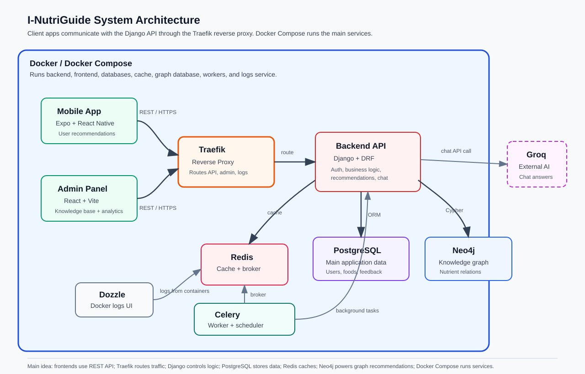

Short technical report for final project documentation
I-NutriGuide is an AI-powered nutrition recommendation system. It recommends foods that complement a user's supplements while respecting allergies, disliked foods, dietary restrictions, goals, and safety rules.
The project is organized as a monorepo with three main applications: the Django backend API, the Expo React Native mobile app, and the React Vite admin dashboard.
apps/ backend/ Django REST API mobile-app/ Expo React Native app admin-panel/ React Vite dashboard packages/ shared-types/ Shared TypeScript contracts infra/ traefik/ Reverse proxy configuration scripts/ Deployment and maintenance scripts docs/ Documentation

| Layer | Technology | Why We Used It |
|---|---|---|
| Mobile app | Expo + React Native | Build a mobile app for users with one React-based codebase. |
| Admin panel | React + Vite | Build a fast web dashboard for admins. |
| Frontend language | TypeScript | Reduce errors and make API data easier to manage. |
| API client | Axios | Send HTTP requests and automatically attach JWT tokens. |
| Server state | React Query | Manage API loading, caching, errors, and refetching. |
| Local state | Zustand | Store authentication/session state simply. |
| Backend | Django | Provide models, routing, settings, admin tools, and business structure. |
| API framework | Django REST Framework | Expose backend features as REST endpoints. |
| Authentication | Simple JWT | Secure mobile and admin requests with access/refresh tokens. |
| Main database | PostgreSQL | Store users, profiles, foods, supplements, recommendations, feedback, and chats. |
| Cache / broker | Redis | Cache recommendations, rate-limit chat, and support Celery. |
| Background jobs | Celery | Run asynchronous or scheduled backend tasks. |
| Graph database | Neo4j | Model relations between users, foods, supplements, nutrients, allergies, and restrictions. |
| AI chat provider | Groq API | Generate conversational nutrition answers from backend-controlled context. |
| Reverse proxy | Traefik | Route production traffic to backend, admin, and logs services. |
| Containers | Docker Compose | Run the whole system locally and in deployment with repeatable services. |
The backend is built with Django and Django REST Framework. It is divided into domain apps:
Important API examples:
POST /api/v1/auth/login/ POST /api/v1/auth/refresh/ GET /api/v1/profile/ POST /api/v1/recommendations/generate/ GET /api/v1/recommendations/history/ GET /api/v1/admin/recommendations/ POST /api/v1/chat/messages/
POST /api/v1/recommendations/generate/ with a JWT token.Mobile App -> Traefik -> Django API -> Redis cache
-> PostgreSQL data
-> Neo4j graph
-> response back to app
The active recommender mainly uses Neo4j graph traversal. It searches relationships such as:
User -> TAKES_SUPPLEMENT -> Supplement Supplement -> CONTAINS_NUTRIENT -> Nutrient Food -> CONTAINS_NUTRIENT -> Nutrient Food -> BELONGS_TO -> Category User -> DISLIKES -> Food
This graph structure helps the system understand supplement-food relationships. For example, if a user takes a supplement connected to a nutrient, Neo4j can find foods connected to the same or useful related nutrients. If Neo4j does not return results, the backend falls back to PostgreSQL and returns active foods while excluding known allergies or disliked foods.
1. Client sends email and password to /auth/login/. 2. Backend returns access token and refresh token. 3. Client sends protected requests with Authorization: Bearer token. 4. Client calls /auth/refresh/ when the access token expires.
Docker Compose is important because it starts all required services together. The backend depends on PostgreSQL, Redis, and Neo4j. The admin panel and mobile app depend on the backend API.
Backend API: http://localhost:8000 Admin panel: http://localhost:5173 Expo app: http://localhost:8081 PostgreSQL: localhost:5432 Redis: localhost:6379 Neo4j: localhost:7474 / 7687 Dozzle: http://localhost:9999
I-NutriGuide uses a modern full-stack architecture. The mobile app and admin dashboard communicate with a Django REST API. PostgreSQL stores the main data, Redis improves performance and supports background processing, Neo4j powers graph-based nutrition recommendations, and Groq provides AI chat explanations. Docker Compose runs the complete system, while Traefik handles reverse-proxy routing for deployment.
This architecture is suitable because it separates responsibilities clearly: frontend clients handle user interaction, Django controls business logic and security, databases store specialized data, and the recommendation engine combines user profile, supplements, foods, graph relationships, and safety rules to produce explainable food recommendations.